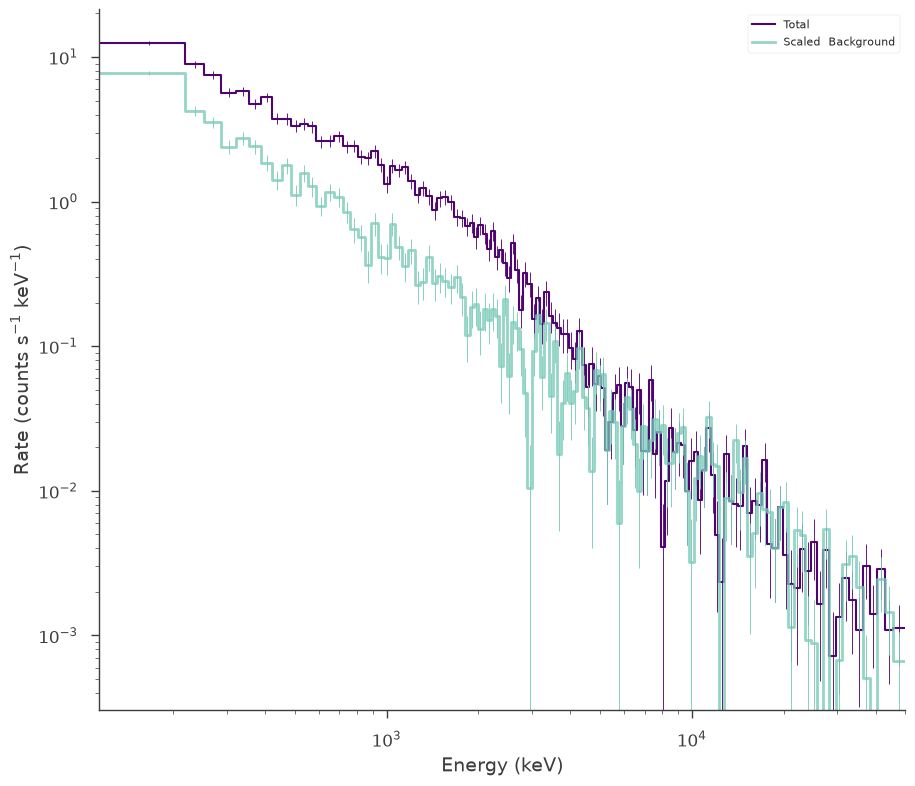
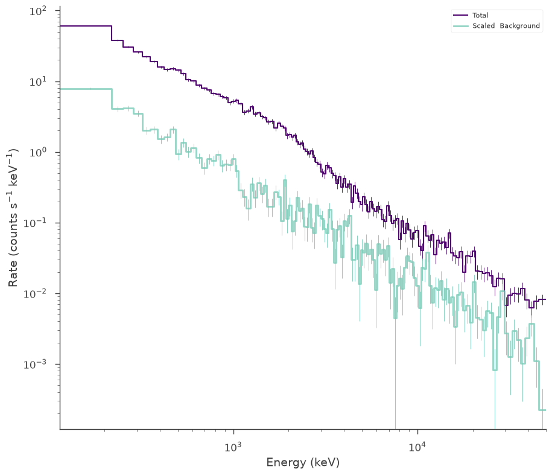

Point Source Fluxes and Multiple Sources
Once one has computed a spectral to a point source, getting the flux of that source is possible. In 3ML, we can obtain flux in a variety of units in a live analysis or from saved fits. There is no need to know exactly what you want to obtain at the time you do the fit.
Also, let’s explore how to deal with fitting multiple point sources and linking of parameters.
Let’s explore the possibilites.
[1]:
import warnings
warnings.simplefilter("ignore")
[2]:
%%capture
import matplotlib.pyplot as plt
import numpy as np
np.seterr(all="ignore")
import astropy.units as u
from threeML import *
from threeML.utils.OGIP.response import OGIPResponse
from threeML.io.package_data import get_path_of_data_file
[3]:
from jupyterthemes import jtplot
%matplotlib inline
jtplot.style(context="talk", fscale=1, ticks=True, grid=False)
silence_warnings()
set_threeML_style()
Generating some synthetic data

Let’s say we have two galactic x-ray sources, some accreting compact binaries perhaps? We observe them at two different times. These sources (imaginary) sources emit a blackbody which is theorized to always be at the same temperature, but perhaps at different flux levels.
Lets simulate one of these sources:
[4]:
np.random.seed(1234)
# we will use a demo response
response_1 = OGIPResponse(get_path_of_data_file("datasets/ogip_powerlaw.rsp"))
source_function_1 = Blackbody(K=5e-8, kT=500.0)
background_function_1 = Powerlaw(K=1, index=-1.5, piv=1.0e3)
spectrum_generator_1 = DispersionSpectrumLike.from_function(
"s1",
source_function=source_function_1,
background_function=background_function_1,
response=response_1,
)
fig = spectrum_generator_1.view_count_spectrum()
The default choice for MATRIX extension failed:KeyError("Extension ('MATRIX', 1) not found.")available: None 'EBOUNDS' 'SPECRESP MATRIX'

Now let’s simulate the other source, but this one has an extra feature! There is a power law component in addition to the blackbody.
[5]:
response_2 = OGIPResponse(get_path_of_data_file("datasets/ogip_powerlaw.rsp"))
source_function_2 = Blackbody(K=1e-7, kT=500.0) + Powerlaw_flux(
F=2e2, index=-1.5, a=10, b=500
)
background_function_2 = Powerlaw(K=1, index=-1.5, piv=1.0e3)
spectrum_generator_2 = DispersionSpectrumLike.from_function(
"s2",
source_function=source_function_2,
background_function=background_function_2,
response=response_2,
)
fig = spectrum_generator_2.view_count_spectrum()
The default choice for MATRIX extension failed:KeyError("Extension ('MATRIX', 1) not found.")available: None 'EBOUNDS' 'SPECRESP MATRIX'

Make the model
Now let’s make the model we will use to fit the data. First, let’s make the spectral function for source_1 and set priors on the parameters.
[6]:
spectrum_1 = Blackbody()
spectrum_1.K.prior = Log_normal(mu=np.log(1e-7), sigma=1)
spectrum_1.kT.prior = Log_normal(mu=np.log(300), sigma=2)
ps1 = PointSource("src1", ra=1, dec=20, spectral_shape=spectrum_1)
We will do the same for the other source but also include the power law component
[7]:
spectrum_2 = Blackbody() + Powerlaw_flux(
a=10, b=500
) # a,b are the bounds for the flux for this model
spectrum_2.K_1.prior = Log_normal(mu=np.log(1e-6), sigma=1)
spectrum_2.kT_1.prior = Log_normal(mu=np.log(300), sigma=2)
spectrum_2.F_2.prior = Log_normal(mu=np.log(1e2), sigma=1)
spectrum_2.F_2.bounds = (None, None)
spectrum_2.index_2.prior = Gaussian(mu=-1.0, sigma=1)
spectrum_2.index_2.bounds = (None, None)
ps2 = PointSource("src2", ra=2, dec=-10, spectral_shape=spectrum_2)
We have set the min_value of composite.F_2 to 1e-99 because there was a postive transform
We have set the min_value of composite.F_2 to 1e-99 because there was a postive transform
Now we can combine these two sources into our model.
[8]:
model = Model(ps1, ps2)
Linking parameters
We hypothesized that both sources should have the a same blackbody temperature. We can impose this by linking the temperatures.
[9]:
model.link(
model.src1.spectrum.main.Blackbody.kT, model.src2.spectrum.main.composite.kT_1
)
we could also link the parameters with an arbitrary function rather than directly. Check out the astromodels documentation for more details.
[10]:
model
[10]:
| N | |
|---|---|
| Point sources | 2 |
| Extended sources | 0 |
| Particle sources | 0 |
Free parameters (5):
| value | min_value | max_value | unit | |
|---|---|---|---|---|
| src1.spectrum.main.Blackbody.K | 0.0001 | 0.0 | None | s-1 cm-2 keV-3 |
| src2.spectrum.main.composite.K_1 | 0.0001 | 0.0 | None | s-1 cm-2 keV-3 |
| src2.spectrum.main.composite.kT_1 | 30.0 | 0.0 | None | keV |
| src2.spectrum.main.composite.F_2 | 1.0 | 0.0 | None | s-1 cm-2 |
| src2.spectrum.main.composite.index_2 | -2.0 | None | None |
Fixed parameters (8):
(abridged. Use complete=True to see all fixed parameters)
Properties (0):
(none)
Linked parameters (1):
| src1.spectrum.main.Blackbody.kT | |
|---|---|
| linked to | src2.spectrum.main.composite.kT_1 |
| function | Line |
| current value | 30.0 |
| unit | keV |
Independent variables:
(none)
Linked functions (0):
(none)
Assigning sources to plugins
Now, if we simply passed out model to the BayesianAnalysis or JointLikelihood objects, it would sum the point source spectra together and apply both sources to all data.
This is not what we want. Many plugins have the ability to be assigned directly to a source. Let’s do that here:
[11]:
spectrum_generator_1.assign_to_source("src1")
spectrum_generator_2.assign_to_source("src2")
Now we simply make our our data list
[12]:
data = DataList(spectrum_generator_1, spectrum_generator_2)
Fitting the data
Now we fit the data as we normally would. We use Bayesian analysis here.
[13]:
ba = BayesianAnalysis(model, data)
ba.set_sampler("ultranest")
ba.sampler.setup(frac_remain=0.5)
_ = ba.sample()
[ultranest] Sampling 400 live points from prior ...
[ultranest] Explored until L=-1e+03
[ultranest] Likelihood function evaluations: 66343
[ultranest] logZ = -1339 +- 0.1967
[ultranest] Effective samples strategy satisfied (ESS = 955.4, need >400)
[ultranest] Posterior uncertainty strategy is satisfied (KL: 0.46+-0.09 nat, need <0.50 nat)
[ultranest] Evidency uncertainty strategy is satisfied (dlogz=0.45, need <0.5)
[ultranest] logZ error budget: single: 0.23 bs:0.20 tail:0.41 total:0.45 required:<0.50
[ultranest] done iterating.
Maximum a posteriori probability (MAP) point:
| result | unit | |
|---|---|---|
| parameter | ||
| src1.spectrum.main.Blackbody.K | (4.64 -0.24 +0.33) x 10^-8 | 1 / (s cm2 keV3) |
| src2.spectrum.main.composite.K_1 | (9.7 -0.7 +0.6) x 10^-8 | 1 / (s cm2 keV3) |
| src2.spectrum.main.composite.kT_1 | (5.11 -0.11 +0.08) x 10^2 | keV |
| src2.spectrum.main.composite.F_2 | (2.06 +/- 0.08) x 10^2 | 1 / (s cm2) |
| src2.spectrum.main.composite.index_2 | -1.512 -0.009 +0.012 |
Values of -log(posterior) at the minimum:
| -log(posterior) | |
|---|---|
| s1 | -597.69557 |
| s2 | -692.11621 |
| total | -1289.81178 |
Values of statistical measures:
| statistical measures | |
|---|---|
| AIC | 2589.863559 |
| BIC | 2607.349446 |
| DIC | 2614.605206 |
| PDIC | 4.903353 |
| log(Z) | -581.594127 |
Let’s examine the fits.
[14]:
fig = display_spectrum_model_counts(ba)
ax = fig.get_axes()[0]
ax.set_ylim(1e-6)
[14]:
(1e-06, np.float64(3450.298428559496))

Lets grab the result. Remember, we can save the results to disk, so all of the following operations can be run at a later time without having to redo all the above steps!
[15]:
result = ba.results
fig = result.corner_plot()

Computing fluxes
Now we will compute fluxes. We can compute them an many different units, over any energy range also specified in any units.
The flux is computed by integrating the function over energy. By default, a fast trapezoid method is used. If you need more accuracy, you can change the method in the configuration.
[16]:
threeML_config.point_source.integrate_flux_method = "quad"
result.get_flux(ene_min=1 * u.keV, ene_max=1 * u.MeV, flux_unit="erg/cm2/s")